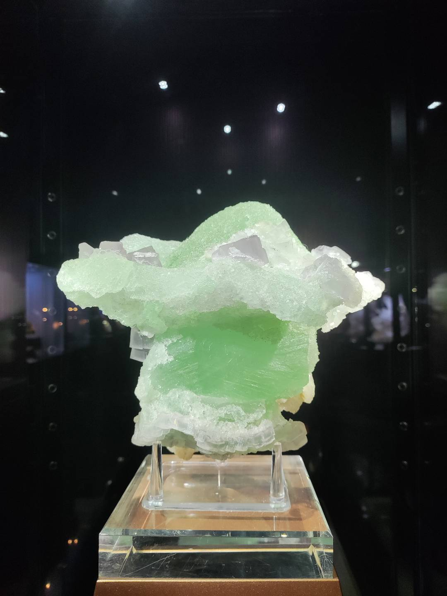
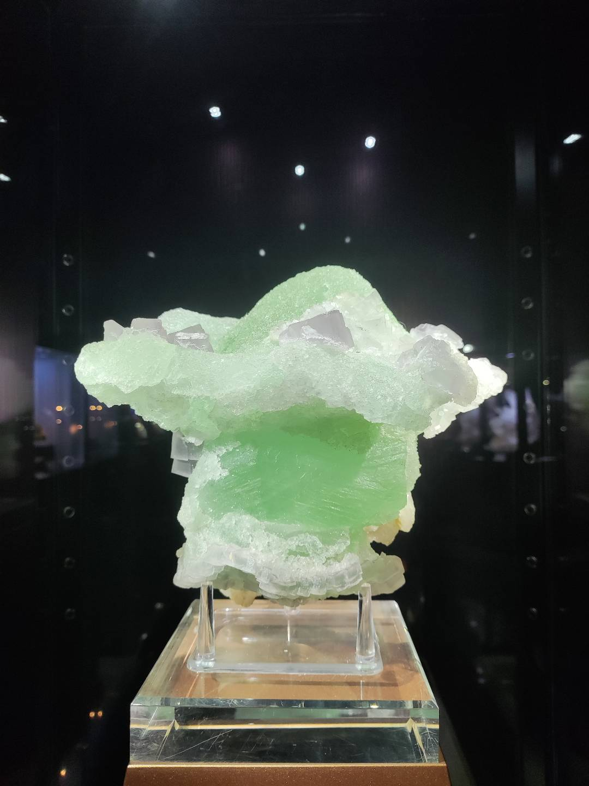

民以食为天。
吃真的是很重要一件事，虽然我个人不是很讲究吃的啦。
翻看相册也是可以找到一些关于吃的图片的。
虽然不常出去玩，但出去玩一定是要和朋友吃一顿的。

玩耍真的好快乐一件事情，不过也蛮累的说。
我其实不怎么出去啦。下面是为数不多的几次外出游玩拍的照片。
 


我真的很喜欢天空，各种各样的。
初高中时靠着栏杆看远方天空是我为数不多的乐趣。
第一张是赶高铁来学校是拍的五点多的家乡。印象中那天还有下雨，路泥泞。
第二张是在宿舍区拍的夕阳。
第三、四张可以看出来是同一片地方，都是在我家楼顶拍的，傍晚时刻的天空。